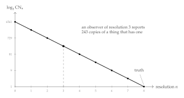
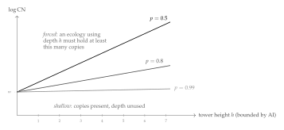

Chapter 53
Scope and Manufacture
Assembly theory characterizes life by two numbers, and they are asymmetrically specified. The assembly index is a minimum over constructions, so whatever else is unclear about it, it does not depend on who is looking. Copy number does: to count copies one must say where to count and what counts as a copy, and the theory says neither. The previous chapter bounded the first number from above. This one supplies the second with the region and the observer it has been missing, and finds that once both are supplied the two numbers stop being independent.
The region is already built. Chapter 18 made a scope a predicate rather than a list, showed that disjointness makes a composite scope parse uniquely, and put fixed points into the name-predicate language so that a self-similar region can be finitely described and unboundedly large. What remains is to count in it, to ask what the counting costs, and to ask what had to be manufactured before there was anything there to count.
53.1 Copy number, graded
53.1.1 Well posed is not effective
The identity criterion is easy to state once the region is fixed. Two processes are copies when no experiment distinguishes them, and the relation that says so is bisimilarity. Definition 48.4 already takes this line, and it is the right one: structural identity is at once too strict, since two conformers of a molecule are the same reagent, and too permissive, since two graphs may agree while the things they denote behave differently under interaction. Behavioral identity is what a count of copies was always trying to track.
What Definition 48.4 gives is therefore well posed. It is not effective. Bisimilarity is undecidable for calculi of this expressiveness [120], so no learner computes it, and in particular no learner computes that count. The gap is the one \(\chSci\) meets in the assay, where a hypothesis that is true but unaffordable is refuted relative to a budget, and the remedy is the same.
For a process \(P\), a scope \(\Nsp\) and \(n \in \mathbb{N}\), \[\CN_n(P, \Nsp) \;=\; \bigl|\{\, c \in \Ext(\Nsp) \;:\; \drop{c} \bisim_n P \,\}\bigr|,\] where \(\bisim_n\) is \(n\)-step bisimulation. By the Hennessy–Milner characterization [121], \(\drop{c} \bisim_n P\) exactly when \(\drop{c}\) and \(P\) agree on all formulae of modal nesting depth at most \(n\).
\(\CN_n(P,\Nsp)\) is computable for finitely branching processes, any generated scope \(\Nsp\), and any finite \(n\), at cost linear in the surveyed extension and in the depth-\(n\) decision procedure.
The resolution \(n\) is not a free parameter. It is the modal depth a learner can afford to evaluate, and Chapter 52 bounds that: by integration depth, hence by tower height, hence by assembly index. So a count of copies has three arguments, and the third belongs to whoever is counting.
53.1.2 The observer enters the count
For \(n' \le n\), \(\ \CN_{n'}(P,\Nsp) \ge \CN_n(P,\Nsp)\), and \(\CN_n \downarrow \CN\) as \(n \to \infty\) for image-finite processes.
\(\bisim_n \,\subseteq\, \bisim_{n'}\) for \(n' \le n\), so the counted set shrinks with \(n\); the limit is the standard approximation theorem for bisimilarity on image-finite processes.
The direction is the opposite of the one intuition supplies. A weak instrument does not miss copies. It manufactures them, by failing to separate things that differ below its resolution, and the manufacture is not a small correction.
Let a population be the leaves of a behavior tree of depth \(h\) and branching factor \(b\), with two members \(n\)-step bisimilar exactly when their paths agree for \(n\) steps. Then for any member \(P\), \[\CN_n(P,\Nsp) \;=\; b^{\,h-n}, \qquad 0 \le n \le h,\] so an observer whose resolution falls short of \(h\) by \(k\) reports \(b^{k}\) times too many copies.
The members \(n\)-step bisimilar to \(P\) are exactly the leaves of the depth-\(n\) subtree containing \(P\), of which there are \(b^{h-n}\); at \(n = h\) only \(P\) itself remains.

To report \(\CN\) correctly for a population whose members separate at depth \(h\), an observer must afford resolution \(h\), and therefore must itself have been assembled to a depth supporting modal nesting \(h\).
It is tempting to summarize Corollary 53.1 as “it takes a mind to find a mind”, and that summary is wrong, or at any rate much stronger than what has been shown. What the observer must match is the depth at which the kinds in a population separate, not the assembly index of any member of it. Those are very different numbers: in the worked composite of §53.4.5 the four kinds separate by depth \(4\) while the individual carrying them has an assembly floor of \(28\). A shallow instrument can therefore certify kind structure it could not begin to build. What it cannot do is report a copy number that means anything, and what it will do instead — silently, with no error signal — is report one too large by a factor exponential in its shortfall. That is the useful claim, and it is a claim about instruments rather than about minds.
The criterion of §48 reads high assembly index together with high copy number as evidence of selection. Proposition 53.3 says the second conjunct is inflated by any instrument that cannot resolve the population, and inflated most where the population is most diverse — which is to say, exactly where selection has been most active in generating the variants a coarse instrument pools. The failure mode is therefore not random noise but a bias aligned with the signal being sought. We do not know how large the effect is in the mass-spectrometric practice the theory was designed around, and we would want it estimated before the criterion is applied to anything as consequential as an extraterrestrial sample. This is a friendly amendment; the criterion survives it, but it survives it as a statement about an instrument and a sample rather than about a sample alone.
53.1.3 The count has a grading it should have kept
In a generated scope there is a second thing wrong with reporting an integer.
For a generated scope \(\Nsp\) with strata as in Definition 18.3, the copy series of \(P\) at resolution \(n\) is \[\CN_n^{\bullet}(P,\Nsp) \;=\; \bigl( \CN_n^{(0)}, \CN_n^{(1)}, \CN_n^{(2)}, \dots \bigr),\] where \[\CN_n^{(j)} \;=\; \bigl|\{\, c \in \Ext(\Nsp) : \str(c) = j,\ \drop{c} \bisim_n P \,\}\bigr| .\] Equivalently, the generating function \(\sum_j \CN_n^{(j)} x^j\).
\(\CN_n(P,\Nsp) = \sum_j \CN_n^{(j)}\), so nothing is lost in passing to the series and a great deal is lost in passing back. The collapse is legitimate exactly when the scope has one stratum — when it is a flat region of like things, which is the situation a jar of reagent approximates and an organism does not. Assembly theory’s copy number is the flat collapse, and the reason that has felt unproblematic is that the theory’s home application really is a jar.
§24.8 concludes, from an argument about typed namespaces and the medium tower that has nothing to do with counting, that the grading vector \(k\) is not a vector but a sequence of vectors, one per stratum. That is the present observation reached from the composition side, and the agreement is some evidence that the stratification is a feature of the subject rather than of either argument.
Three uses, in increasing order of speculativeness. First, it distinguishes architectures the integer confuses: a colony of a thousand like cells and an organism of a thousand cells in four tissues have the same \(\CN\) and different series. Second, the ratio between consecutive terms is a branching factor, and §53.4 argues that this factor is forced from below by repair and by sampling, so the series has a shape one can predict and check. Third, if the biosignature is to be read off a series rather than a number, the criterion becomes a statement about shape, and “many copies at low strata, few at high, with a ratio bounded below by reliability” is a far more specific fingerprint than “the copy number is large”. We do not develop the third.
53.1.4 A worked series
Take the two-atom generated scope of Definition 18.2 and populate it: let \(\phi\)-atoms be sources and \(\psi\)-atoms be foragers, and let the population instantiate every shape at strata \(0\) through \(2\) with multiplicity \(12\). By Table 18.1 there are \(17\) shapes, distributed \(2 : 3 : 12\) over the strata, so the populated scope has \(204\) channels.
Ask for the copy number of a stratum-\(1\) shape, say \(\quo{(\phi \mid \psi)}\). The truth is \(12\). A learner of resolution \(2\) separates all three stratum-\(1\) shapes and reports \(12\). A learner of resolution \(1\) separates \(\quo{(\phi\mid\psi)}\) from \(\quo{(\phi\mid\phi)}\) but not from \(\quo{(\psi\mid\psi)}\), if the two atoms agree on their first step, and reports \(24\). A learner of resolution \(0\) reports \(36\); and an instrument that counts occurrences rather than channels, and so fails to separate strata at all, reports \(204\).
The series makes legible what the integer does not: \[\CN_2^{\bullet} = (0,\,12,\,0), \qquad \CN_1^{\bullet} = (0,\,24,\,0), \qquad \CN_0^{\bullet} = (0,\,36,\,0), \qquad \text{flat} = 204 .\] Every one of these is a defensible answer to “how many copies are there”. Only the first is an answer to “how many copies are there, at the resolution at which copies are a kind”.
53.2 Some cheap lower bounds
53.2.1 What a lower bound would have to be
Upper bounds on what an assembled thing can do come easily here, and Chapter 52 has several: exhibit an invariant that cannot exceed the assembly index, then bound capability by the invariant. Lower bounds run the other way and are much harder, because \(\AI\) is a minimum over constructions, so a lower bound asserts that no shorter construction exists. That is an incompressibility statement, and incompressibility statements are notoriously resistant.
There is one tractable route. Find quantities \(\iota_1, \dots, \iota_m\) that are monotone along assembly edges, forced to a minimum value by the capability in question, and witnessed by disjoint sets of edges. Then \(\AI(E) \ge \sum_i \iota_i(E)\); without the third condition one gets only \(\AI(E) \ge \max_i \iota_i(E)\). The third is the hard one in general, and §53.2.4 observes that the disjointness of Chapter 18 certifies it in the cases that matter.
Six such quantities follow. They are all obvious once stated, none requires an argument longer than a paragraph, and we make no claim that their sum is anywhere near the truth.
53.2.2 Six floors
| capability | floor | from | |
|---|---|---|---|
| L1 | having an inside | \(\AI \ge 1\) | Definition 24.6 |
| L2 | owning a boundary | \(\AI \ge 2\) | Proposition 24.7 |
| L3 | carrying a germ | \(+1\) | no-self-code |
| L4 | resolving at depth \(n\) | \(\AI \ge n\) | Theorem 52.1 |
| L5 | escaping a basin of radius \(2^{-n}\) | \(\AI \gtrsim n\) | Proposition 21.4 |
| L6 | repairing itself | \(\AI \ge \bt\) | Theorem 24.2 |
L1: having an inside.
An ecology-as-mind is a region distinguished from its environment, so there is at least one medium whose endpoints straddle the boundary. A medium is a process and must be constructed — by no-self-code it is not among the terms it carries — so its construction is a joining step.
L2: owning a boundary.
Definition 24.6 asks that internal media be closed and boundary media not, which requires the two to be distinguishable and hence separately constructed: a single medium serving both roles would put the interior under external naming and dissolve the closure that makes repair possible. And by Proposition 24.7 a mind that has paid for the boundary must also have paid for at least one redex pathway across it, since perfect closure is death. We fold the pathway into L2 rather than counting it separately.
L3: carrying a germ.
The germ of §21.12.2 is a quotation, transmissible and inert until dropped. By no-self-code it is not among the names occurring in what it encodes: the germ sits strictly above what it quotes. So the machinery that manipulates germ material occupies a level of the tower above the machinery it manipulates, and by Proposition 52.1 each level costs at least one edge of a minimum path. Reproduction is \(+1\), unconditionally, over the floor of a thing that does not reproduce.
L4: resolving at depth \(n\).
This one is free: it is the contrapositive of a theorem already proved. If an ecology of assembly index \(\AI\) cannot distinguish environments that are \(\AI\)-step bisimilar, then an ecology that does distinguish environments differing only at depth \(n\) has \(\AI \ge n\). Every upper bound on capability is a lower bound on manufacture read backwards, and this is the cleanest instance.
L5: escaping a basin.
By Proposition 21.4 a walk whose steps are all shorter than \(2^{-n}\) never leaves the ball of that radius. Escape requires a revision move of distance at least \(2^{-n}\), which by Definition 21.6 means a locus at term-depth at most \(n\) together with an operation applied there. Addressing a locus at depth \(n\) requires a one-hole context of that depth, and that must be built. So a learner able to leave its initial basin pays on the order of \(n\) steps for the addressing alone.
L6: repairing itself.
By Theorem 24.2 the total detection strength of the price code is exactly \(\bt\), and an edge lying on no cycle carries no discipline at all. So a region that can detect a single-edge fault has \(\bt \ge 1\) and one detecting \(m\) independent faults has \(\bt \ge m\). Each independent cycle requires an edge that closes it, and those edges are joining steps.
53.2.3 Genetic exploration, and the difference between a learner and a scorer
L3 and L5 combine into the one bound here we find genuinely interesting, because it separates two things the framework has otherwise treated together.
Let \(S\) be an ecology that evaluates hypotheses drawn from a fixed ball of radius \(2^{-n}\) and never leaves it, and let \(L\) be one that can leave. Then \[\AI(L) \;\ge\; \AI(S) + 1 + n^{-},\] where the \(+1\) is the germ level of L3 and \(n^{-}\) is the term-depth of the shallowest locus whose revision leaves the ball.
By confinement no sequence of moves available to \(S\) leaves the ball, so whatever \(L\) has that \(S\) lacks is not a longer run of the same machinery. By §21.6.5 the escape available inside this framework is recombination; by L3 germ material costs a tower level; by L5 the move must address a locus at depth \(n^{-}\). The germ level and the addressing contexts are constructed from different material — the first from the learner’s own code as quoted, the second from the term structure being addressed — so their edges are distinct.
Read as a design statement rather than a bound: sexual recombination is not an optimization of an existing search but the purchase of a search that was not previously available at any price. Confinement says an individual cannot get out of its basin by trying harder; Proposition 53.4 says what getting out costs, and the cost is structural — a level of the tower — rather than metabolic. That is a satisfying place for the price of sex to sit, because it explains why the price is paid once, architecturally, rather than continuously.
A mind with \(k\) skills, each realized as an ecology-as-mind, does not pay L3 \(k\) times. The germ quotes the whole individual’s code, and quotation does not distribute over the parts in a way that would require one germ level per skill. This is the first appearance of an economy that §53.3 and §53.4.5 make quantitative: architecture is paid for once, content is paid for per skill.
53.2.4 Disjointness is the additivity certificate
Let an ecology \(E\) have strata rooted at pairwise disjoint scopes \(\Nsp_1, \dots, \Nsp_m\) in the sense of Proposition 18.1. Then no single joining step contributes to two strata, and therefore \(\AI(E) \ge \sum_i \iota(\Nsp_i)\) for any per-stratum floor \(\iota\) monotone along assembly edges.
A joining step produces a term \(T\), and the step contributes to stratum \(i\) only if \(\quo{T} \in \Ext(\Nsp_i)\). Disjointness makes that membership exclusive, so each step is charged to at most one stratum, and the per-stratum floors are supported on disjoint edge sets of any construction path — in particular of a minimum-length one.
Chapter 52 left open whether the joining steps for distinct levels of the medium tower are distinct edges of a single minimum-length path, noting that if one construction could serve two levels the count would collapse. Proposition 53.5 discharges that obligation whenever the levels are rooted at disjoint scopes — which, by Proposition 23.9, is something a designer or a lineage can arrange rather than something that must be hoped for. The general case, where levels are not disjointly rooted, remains open, and we suspect it is genuinely harder rather than merely unwritten.
53.2.5 Why we stop here
The sum of Table 53.1 for a reproducing, repairing, depth-\(n\)-resolving individual is something like \(n + \bt + 4\), and §53.4.5 evaluates it at \(28\). The true minimum is presumably very much larger, for the reason Remark 52.1 gives: the assembly index counts everything built, including redundancy, repair machinery and bulk, while these floors count only the building that buys a named capability. The ratio between them is the interesting quantity and we cannot compute it.
That is a reasonable place to leave it. A framework earns attention by making quantities visible before it makes them sharp, and a floor anyone can check and improve is a better invitation than a theorem that closes the question. The lower-bound problem for minds is at about the stage the lower-bound problem for circuits was before anyone had a technique: everybody can see what a bound would have to look like and nobody can produce one. We would be pleased to be scooped on this.
53.3 Generator and unfolding
Table 18.1 showed a generator of fixed size whose extension grows doubly exponentially. With the assembly index in hand there are three quantities to relate, not two.
For an ecology \(E\) whose namespace is generated by \(\Nsp\), \[\gen(\Nsp) \;\le\; h(E) \;\le\; \AI(E)\] under the convention that atomic predicates are at least one symbol and each level of the tower is generated by at least one unfolding.
\(\gen\) answers “how long is the description”; \(h\) answers “how many levels of inside does it have”; \(\AI\) answers “how many steps did it take to build”. Under \(\mu\), \(\gen\) is constant while \(h\) grows with the unfolding and \(\AI\) grows at least as fast as \(h\). Two ratios follow, and they measure different virtues: \[\frac{h}{\gen} = \text{how much depth a description buys}, \quad \frac{h}{\AI} = \text{architectural efficiency}.\] The second is the ratio Remark 52.1 proposes as a measure of how much of an organism’s manufacture bought a new inside. The first is new, and it is the one corresponding to something biologists already measure: a small genome producing a deep organism is a large \(h/\gen\).
This is not an analogy, and both objects are already in hand. The germ of §21.12.2 is a quotation: inert, transmissible, inspectable, and costing nothing until dropped. The generator of Definition 18.2 is a formula: finite, transmissible, and costing nothing until unfolded. In an ecology whose namespace is generated these coincide — what is inherited is the generator, and development is the unfolding. The assembly index prices the unfolding, which is why a genome can be small while its organism is deep, and why the two numbers were never going to be the same number.
The bounds of Chapter 52 are additive: one level, one edge, one unit of modal depth. That additivity is inherited from the tower argument and there is no reason to doubt it there. But a lower bound routed through characteristic formulae rather than through the tower would need to know how far the modal depth of a characteristic formula for \(P \mid Q\) can exceed those for \(P\) and \(Q\), and if a single joining step can more than increment it then bounds of that shape degrade from \(n\) to \(\log n\). Nothing here needs that route — all six floors go through structure rather than through characteristic formulae — but anyone extending this work should check it before relying on it.
53.4 The pressure on copy number
The two parameters of the biosignature look independent. One is a property of an object and the other of a population, and nothing in assembly theory relates them beyond the observation that in living matter both are large. Here they are related, by two mechanisms pushing the same way: an architecture that is deep requires copies before anyone wants them for statistics.
53.4.1 Detection forces copies
By Theorem 24.2 the total detection strength of the price code is \(\bt\), distributed over edges by effective resistance, and an edge on no cycle is undetectable. A region whose internal media form a tree therefore has no error correction at all: every fault is silent, and by Corollary 24.10 a bridge fails twice, having neither a cycle to check it nor an owner to repair it.
Repairability requires cycles; a cycle requires a redundant pathway; and a redundant pathway between two functional positions is two copies of a relation where one would carry the traffic. The requirement recurs per stratum, since each level of the tower has its own media and its own faults.
An ecology whose stratum-\(j\) media can detect \(m_j\) independent single-edge faults has \(\bt^{(j)} \ge m_j\), and therefore carries at least \(m_j\) media in excess of a spanning structure at that stratum.
This is a floor on copies of media, and it is small. The second mechanism is not.
53.4.2 Sampling forces copies, exponentially
By Proposition 24.9 a percept of integration depth \(d\) traverses \(d\) hops of internal medium and survives with probability \(p^{d}\). A hypothesis at that depth needs \(m\) independent confirmations before a learner will fund a revision on it, and confirmations attempted in parallel are attempted by copies.
To obtain \(m\) usable depth-\(d\) confirmations per round, an ecology requires \(\CN \ge \lceil m\, p^{-d} \rceil\) learners positioned at that depth.
| \(p \backslash d\) | \(1\) | \(2\) | \(3\) | \(4\) | \(5\) | \(6\) | \(7\) | \(8\) |
|---|---|---|---|---|---|---|---|---|
| \(0.99\) | \(21\) | \(21\) | \(21\) | \(21\) | \(22\) | \(22\) | \(22\) | \(22\) |
| \(0.95\) | \(22\) | \(23\) | \(24\) | \(25\) | \(26\) | \(28\) | \(29\) | \(31\) |
| \(0.90\) | \(23\) | \(25\) | \(28\) | \(31\) | \(34\) | \(38\) | \(42\) | \(47\) |
| \(0.80\) | \(25\) | \(32\) | \(40\) | \(49\) | \(62\) | \(77\) | \(96\) | \(120\) |
| \(0.70\) | \(29\) | \(41\) | \(59\) | \(84\) | \(119\) | \(170\) | \(243\) | \(347\) |
| \(0.50\) | \(40\) | \(80\) | \(160\) | \(320\) | \(640\) | \(1280\) | \(2560\) | \(5120\) |
53.4.3 The two axes are coupled
An ecology that uses its architecture — one whose hypotheses are evaluated at integration depths reaching its tower height \(h\) — has \[\CN \;\gtrsim\; m\, p^{-h},\] and since \(h \le \AI\), a point of the \((\AI, \CN)\) plane at reliability \(p\) lying below the curve \(\CN = m p^{-\AI}\) belongs to an ecology that does not use its full depth.

“High assembly index and high copy number” is, on this reading, not a conjunction of independent findings but a point above a line whose slope is \(\log(1/p)\). The framework accordingly predicts something the bare conjunction does not: the ratio \(\log \CN / h\) should cluster near \(\log(1/p)\) for systems using their architecture and fall well below it for systems that are merely abundant. A crystal is abundant and shallow; a bacterium is deep and abundant in the proportion its chemistry can sustain. If the ratio is measurable this is falsifiable, and it is falsifiable in a way the conjunction is not. It also sharpens the joint rise of Remark 50.5: that remark says the two numbers go up together after the phase transition, and this one says how fast.
53.4.4 A prediction about scarcity
Depth is priced exponentially and width linearly, so under a contraction of resources a lineage should shed the exponentially priced axis first. Reducing \(h\) by one releases a factor \(p^{-1}\) of the sampling requirement at every stratum above the cut, together with the media, repair and enzyme machinery of the level removed; reducing \(\CN\) by one releases one learner’s maintenance. The first is worth vastly more per unit of structural change. So we expect — as an empirical matter, and stated as an expectation rather than a theorem — that lineages entering sustained scarcity lose architectural levels before they lose population, and that the reverse pattern indicates something other than resource pressure. Regressive evolution in parasites and cave fauna is the obvious place to look, and the obvious confound is that the same pressure removes the selective reason for a level as well as the means to pay for it.
53.4.5 A worked composite: four skills, one individual, twelve of them
Now the numbers, carried through a mind whose skills are themselves ecologies-as-mind, in the manner of §23.11. The illustration is orca-shaped and the shape does no work beyond making the skills memorable: a hunting skill, a skill for one’s place in the pod, a mating skill, and a skill for rearing calves. Each is a population of mortal scientists in its own typed namespace with its own token flavor; the four are wired by enzymes; the whole closes over its namespace and is an individual; and twelve such individuals form a pod, which is a candidate individual one stratum up.
The generator.
The individual’s scope is \[\Nsp \;=\; \mu X.\; \quo{\bigl( (\phi_{\mathrm{for}} \lor X) \mid (\phi_{\mathrm{pod}} \lor X) \mid (\phi_{\mathrm{mat}} \lor X) \mid (\phi_{\mathrm{rea}} \lor X) \bigr)},\] the four-predicate version of Definition 18.2. The four predicates are pairwise disjoint — each skill’s population is rooted at its own quotation, by Proposition 23.9 — so the scope parses uniquely, membership is decidable by Proposition 18.2, and the floors may be added by Proposition 53.5.
Depths and populations.
Each skill sits on media of its own reliability: the pod and rearing skills run on internal, owned media (\(p = 0.99\)); hunting reaches across the boundary into a noisy world (\(p = 0.95\)); mating runs across another individual’s boundary and is worst (\(p = 0.90\)). Optimal integration depth follows Proposition 24.9, maximizing \(Y(d)p^{d} - cd\) with \(Y(d) = 100(1-2^{-d})\) and \(c = 2\); the sampling floor follows Proposition 53.8 with \(m = 20\).
| skill | \(p\) | \(d^\ast\) | net value | \(\CN\) floor | separates at |
|---|---|---|---|---|---|
| Forage | \(0.95\) | \(3\) | \(69.0\) | \(24\) | \(4\) |
| Pod | \(0.99\) | \(5\) | \(82.1\) | \(22\) | \(2\) |
| Mate | \(0.90\) | \(3\) | \(57.8\) | \(28\) | \(3\) |
| Rear | \(0.99\) | \(5\) | \(82.1\) | \(22\) | \(3\) |
| \(96\) |
Note which skill is most expensive in copies. It is not the deepest; it is the one on the worst medium. Mating costs \(28\) learners to sustain depth \(3\) while the pod skill costs \(22\) to sustain depth \(5\), because reliability enters the floor exponentially and depth only through the exponent. An architecture is expensive where it is unreliable, not where it is deep.
The copy series.
Twelve individuals, each with \(96\) learners in four skill-ecologies: \[\CN^{\bullet}(\text{pod}) \;=\; (1152,\; 48,\; 12,\; 1),\] being learners, skill-ecologies, individuals, and the pod itself. The flat collapse is \(1213\), a number that answers no question anyone would ask. The ratios \(1152 : 48 : 12 : 1\) are \(24\), \(4\) and \(12\), and those are respectively a sampling floor, a skill count and a group size — three different kinds of fact about the animal, which the collapse blends into one meaningless total.
The assembly floor.
Applying Table 53.1 with the additivity of Proposition 53.5:
| component | steps | from |
|---|---|---|
| kernel: inside, boundary, germ, stack, assay | \(5\) | L1–L3, paid once |
| differentia: \(d^\ast\) per skill, \(3+5+3+5\) | \(16\) | L4, L5 |
| wiring: joining four parts, \(\lceil \log_2 4\rceil\) | \(2\) | |
| enzymes: four, to close a cycle over four flavors | \(4\) | L6 |
| closure of the individual’s namespace | \(1\) | L2 |
| floor | \(\mathbf{28}\) | |
| same, with no kernel sharing (\(5 \times 4\)) | \(43\) |
Two numbers to take from this. Sharing the kernel across the four skills saves \(15\) of \(43\) steps, or \(34.9\%\); and of the \(28\) remaining, \(16\) — \(57.1\%\) — are content rather than architecture. The fractal is cheap and the niches are expensive.
One expects a mind made of minds to be expensive because it is deep. It is not: depth is what the fixed point gives away, since a generator that describes one level describes all of them, and copies of a made thing are free in assembly index. What a multi-skilled mind pays for is differentiation — the distinct predicates, assays and token flavors that make hunting not-mating. Under this accounting an animal’s assembly index tracks the number of distinct niches it addresses far more closely than the elaborateness of its architecture, and two animals of very different apparent sophistication addressing the same number of niches should come out close together.
Does the whole close?
By §24.8 a region may close over its namespace exactly when its isoperimetric ratio clears \((\varepsilon\theta/\rho)\,r\). Taking \(\theta = 0.2\), \(\rho = 5\) and \(\varepsilon = 1-p\) for the relevant media: the individual, with internal media at \(p = 0.99\) and two of its four skills facing outward so that \(h = 0.5\), has \(\varepsilon\theta/\rho = 4\times 10^{-4}\) and critical radius \(r^\ast = 1250\); it closes with enormous margin. The pod, whose media run across individual boundaries at \(p = 0.90\) and whose isoperimetric ratio we take as \(0.3\), has \(\varepsilon\theta/\rho = 4\times 10^{-3}\) and \(r^\ast = 75\). A pod of twelve closes. An aggregation of two hundred does not.
The number \(75\) is a consequence of parameters we invented, and nothing here determines \(\theta\), \(\rho\) or the isoperimetric ratio of a pod. What is not invented is the shape of the result: there is a finite size beyond which a social aggregation cannot close over its namespace, it scales as \(\rho/(\varepsilon\theta)\), and it is set by the reliability of the media running between individuals rather than by anything about the individuals. We note without pressing it that the literature on cohesive group size in social mammals lives in this neighborhood, and that the framework predicts the bound should move with communication reliability rather than with brain size. We would not want that repeated as a result.
What a passing instrument sees.
Finally the point of §53.1, made concrete. The four skills’ learners share the kernel and separate at depths \(2, 3, 3, 4\). An observer surveying the pod’s namespace at resolution \(n\) reports:
| resolution \(n\) | kinds | largest class | |
|---|---|---|---|
| \(0\) | \(1\) | \(1152\) | everything is one kind |
| \(1\) | \(1\) | \(1152\) | |
| \(2\) | \(2\) | \(888\) | the pod skill separates |
| \(3\) | \(4\) | \(336\) | mating and rearing separate |
| \(\ge 4\) | \(4\) | \(336\) | truth |
An instrument at resolution \(0\) reports a copy number \(3.4\) times the truth and a monoculture where there are four kinds; at resolution \(2\) it is still wrong by a factor of \(2.6\) on the largest class. And note the small mercy at \(n = 3\): once every kind but one has been separated, the last comes free, because what remains in the pool is a kind by elimination. A survey therefore needs resolution equal to the second-deepest separation, not the deepest — a saving of exactly one kind’s worth of instrument, and the only place in this chapter where the accounting is generous.
53.5 The survey, in rholang
Two contracts. The first decides membership in a generated scope by
descent, per Proposition 18.2. The second surveys a
scope and returns a copy series. Both follow the conventions of
§22.13: a bare parameter is a name, an @-pattern
binds data, and a channel is passed as *c. Guards marked
//! ideal stand for decision procedures assumed rather than
implemented.
new InScope, Split, Survey, Series, BisimN, Atom, Stratum in {
// ---- membership by descent -------------------------------------
// mu X . @( (phi \/ X) | (psi \/ X) ), presented as a list of
// atomic predicates and tested by structural descent on the quote.
contract InScope(@nm, atoms, ret) = {
new hit in {
Atom!(nm, *atoms, *hit) |
for (@isAtom <- hit) {
if (isAtom) { ret!(true) }
else {
// By "Unique decomposition" the split is unique, so one
// split and two recursive calls -- no search.
new sp in {
Split!(nm, *sp) |
for (@p, @q, @ok <- sp) {
if (not ok) { ret!(false) }
else {
new l, r in {
InScope!(p, *atoms, *l) |
InScope!(q, *atoms, *r) |
for (@a <- l & @b <- r) { ret!(a and b) }
}
}
}
}
}
}
}
} |
// Split returns the unique decomposition of a quoted parallel
// composition. Termination of the recursion above is exactly the
// no-self-code theorem: p and q code strictly smaller terms.
contract Split(@nm, ret) = {
match *nm {
{ P | Q } => { ret!(@P, @Q, true) } //! ideal
_ => { ret!(Nil, Nil, false) }
}
} |
// ---- the survey ------------------------------------------------
// Visit each channel of the scope, decide n-step bisimilarity with
// the target, and bin by stratum. One metered rendezvous per
// visit: this contract is where a copy number is paid for.
contract Survey(@target, chans, @n, ret) = {
new tally in {
tally!({}) |
for (@c <= chans) { // one visit per channel
new b, s in {
BisimN!(c, target, n, *b) | //! ideal, cost kappa(n)
Stratum!(c, *s) |
for (@same <- b & @j <- s) {
for (@acc <- tally) {
if (same) { tally!(acc.set(j, acc.getOrElse(j,0) + 1)) }
else { tally!(acc) }
}
}
}
} |
for (@acc <- tally) { ret!(acc) } // the copy series
}
} |
// The flat collapse, for comparison with the received definition.
contract Series(@series, ret) = {
ret!( series.values().fold(0, (a, b) => a + b) )
}
}
Three things the listing makes visible that the prose does not. The
recursion in InScope has no depth bound in its own code — it
terminates because of a theorem about the calculus, not because of a
counter. Survey charges once per channel, which is what makes
affordable scope a budget question rather than a definitional one. And
Series exists only to throw information away; it is the received
copy number, written as the lossy projection it is.
53.6 What this leaves
Four things, and they belong with the gaps of Chapter 54 rather than here, so they are recorded there. The shortest statement of each: whether a non-well-founded scope could be surveyed stratum by stratum; whether the copy series can tell a merged composite from a merely composed one; whether affordable scope and the individuation fixed point of Remark 24.11 have a common solution; and what a copy number looks like once one admits that a survey is an assay, and so has a third outcome.
There is also a connection that runs forward rather than sideways. A learner’s region is bounded by what it can pay to survey, so the unsurveyable is not the unknowable in principle but the unaffordable in fact — and that is precisely the distinction §68.5.1 builds on when it argues that the noumenal survives in this framework as a budget constraint rather than as a wall. Copy number turns out to be a place where that abstraction has a number attached: what a mind can count is bounded by what it was assembled to resolve, and what it can survey is bounded by what it can afford to visit. Both bounds are economic, both are movable, and neither is a limit on what is there.